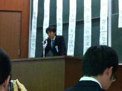

総長杯

総長杯(東京大学総長杯争奪全国学生弁論大会)は、毎年秋に東京大学弁論部が開催する大会です。
秋の学生弁論大会シーズンのなかでもとりわけ格式高い大会であり、毎年多くの聴衆でにぎわいます。
一般の方のご来場も歓迎しております。是非弁士たちの熱い想いに耳を傾けにいらしてください。
なお入場は無料・申し込み不要、途中入退場は自由となっています。
第39回（2019年度）東京大学総長杯争奪全国学生弁論大会について
大会趣意
弁論大会って、なんだ？
過去20年間で進展した『情報の民主化』は、私たちの手元に自由かつ効果的な意見発信の手段をもたらしました。海を越えて遠く離れた誰かにも、自分の主張を伝えることのできる現代。SNSの投稿から始まったムーヴメントが、人々を一つにつなぎ、世界を変える瞬間を、私たちは幾度となく目撃してきました。当たり前とされてきた価値観の偽善さが、たった140字の「つぶやき」で曝露される瞬間は、今日においてはありふれたものとなっています。
しかし、『情報の民主化』は、ポジティブな影響だけを我々にもたらしたわけではありません。ソーシャルメディアの発達は、抑圧された人々を一つにつなぐ一方で、意見の分極化をももたらしました。一方で似たような意見の人とつながることは、以前よりもはるかに容易になりました。他方では反対の意見を持つ人々との対話はより得難いものになっています。「いいね」と「リツイート」による同意によって、反論にさらされたことのない臆断が、無限に拡散していく。それが私たちの直面する社会です。
こうした現代社会において、弁論大会をいかなる形で再定位するのか。「弁論の目的は、聴衆を説得することを通じて社会を変革すること」。『情報の民主化』は、弁論のこうした理念を一挙に打ち砕きました。自宅から手元の情報端末を使って意見発信をできる今、堅苦しく演壇に立って限られた聴衆に訴えることにどんな意義があるのでしょう。今弁論大会を開こうとする私たちは、弁論大会が現在の社会において持ちうる意味を真摯に考えねばなりません。「弁論大会って、なんだ？」「弁論ってなんのためにあんの？」こうした問いに答えることなくして、弁論大会も、そして弁論も、始まることはないでしょう。
弁論大会では、あらゆる主張が批判にさらされます。また根拠のない臆断が評価されることもないでしょう。様々な意見で分裂した社会の縮図が、弁論大会に集う聴衆であり、そして異なる立場の人々から成る聴衆と対話を重ね、その先に自らの意見による他者の説得というゴールを目指す者こそが、弁士であるべきなのです。弁論とは、現在の社会では得難い、多様な意見を持つ人たちとの対話であり、弁論大会はそのための空間であるべきなのです。
そんな対話のための空間である弁論大会という場において、弁士には何が求められるのか。弁士は「どうでもいい政策提言」や「当たり前のことの言い直し」にその時間を費やしてはなりません。それでは弁論をやる必要性がないからです。弁士はこの場で「一方的な価値の押し付け」や「独断と偏見に基づく論難」を行ってはなりません。それは対話を拒否する態度だからです。弁士は自分の引用する根拠に不誠実であってはなりません。それは意義ある対話を遠ざけるからです。「新たにスポットライトを当てる」または「スポットライトの当て方を変える」、そんな対話に値する問題提起が弁士には求められます。「今までいかに議論されてきたか」「どんな議論が欠けているのか」それを分析することなくして、説得的な弁論はあり得ません。
弁論大会は弁士だけのものではありません。弁論大会に足を運ぶ皆さんもまた、弁論大会を意義あるものにする上で大きな役割を果たしています。聴衆の皆さんに期待されるのは、弁論大会の作り手としての良識です。具体的には、弁士の主張に真摯に耳を傾け、その上で質疑応答を通じて対話しようとする態度が求められます。野次をすることに夢中になって、全体の主張の理解を妨げ、あまつさえ弁士の主張を理解し損ねるようなことはあってはなりません。野次は主張を理解するためにあるものです。
「賛成か反対か」「保守か革新か」「左翼か右翼か」分断された社会は、対立軸を二元化します。しかし賛成でもいかなる意味で賛成なのか、いかなる意味で反対なのか。単純化された二項対立の図式の中で、見落とされた視点を救い出し、独自の提案ができることこそが、弁論という形式の意義だと思います。だから、今でも、いや今だからこそ、弁論を、弁論大会を。
(2019年8月7日、13:03分更新）
大会概要
日時：2019年12月15日（日）
開場 9：00 開会式9：30-
終了予定 18：00
場所：東京大学本郷キャンパス 大講堂(安田講堂)
最寄駅：東大前駅・本郷三丁目駅・根津駅
日程予定：
9 時 30 分 開会式
10時00分 第一弁士
10時45分 第二弁士
11時30分 第三弁士
12時15分 昼休み
13時10分 第四弁士
13時55分 第五弁士
14時40分 第六弁士
15時15分 小休憩
15時30分 第七弁士
16時15分 第八弁士
16時55分 休憩
17時45分 閉会式
申し込みについて
出場応募期限：10月16日（水）17時まで（※2019年10月5日21時30分更新）
出場資格：制限なし。ただし各学生弁論団体からの応募は各団体一名までとする。
出場人数：8名
弁論テーマ：自由。弁士の裁量に任せる。
弁論規定：弁論15分、質疑20分程度。
大会詳細：https://bit.ly/31jcgzy
申込方法：申込用紙（https://bit.ly/2YLLGBQ）を記入の上、期限までに ichiko.todai.benronbu(a)gmail.com（"(a)"は＠に変換）まで原稿（Word形式）とともに送付する。